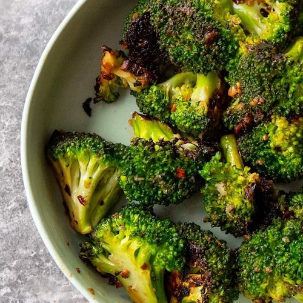

Broccoli (pan fried)

Description
Broccoli, pan fried, is delicious and easy. You'll never cook it another way.
Ingredients
- Broccoli (1 large)
- Olive Oil, 2 tablespoons
- Pepper / Salt
Steps
- Put a medium/large pan on the stove on medium heat.
- Cut the broccoli in smaller bite size portions. Remove the bottom half of the large stem.
- Put the broccoli into the heated pan. Add a half teaspoon of pepper and enough salt to taste.
- Add in about 2 ounces of hot water to create steam, then put a lid on the pan.
- Cook for 3.5-4 minutes, then stir, and cook another 3.5-4 minutes.
- If you prefer it more charred then you may need to cook another minute longer or so. You
can add another ounce of water to prevent burning and sticking.
- Remove from pan and serve.